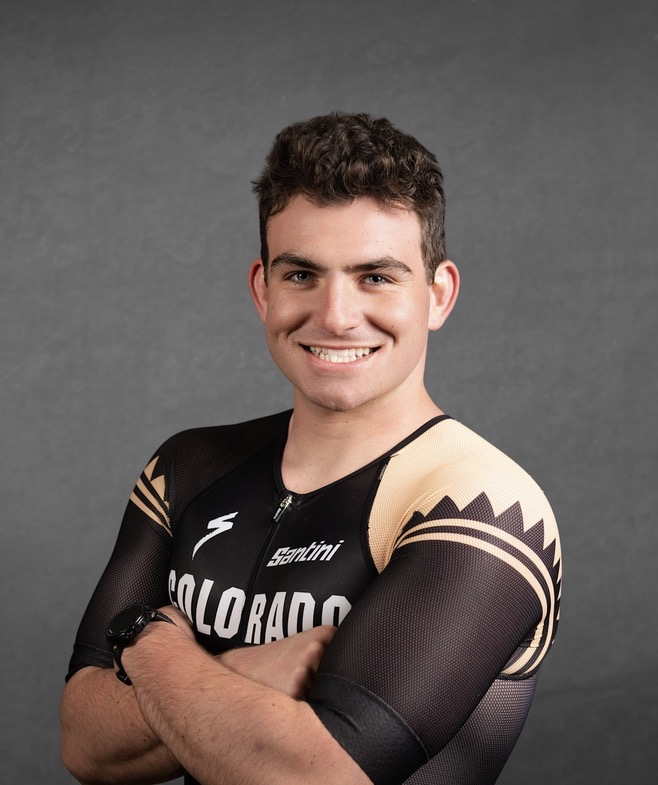
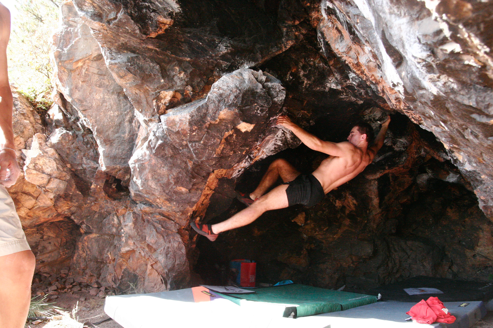
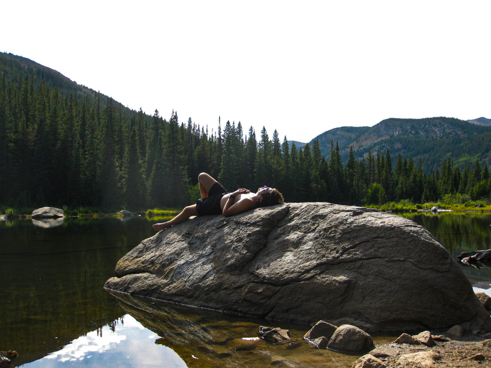
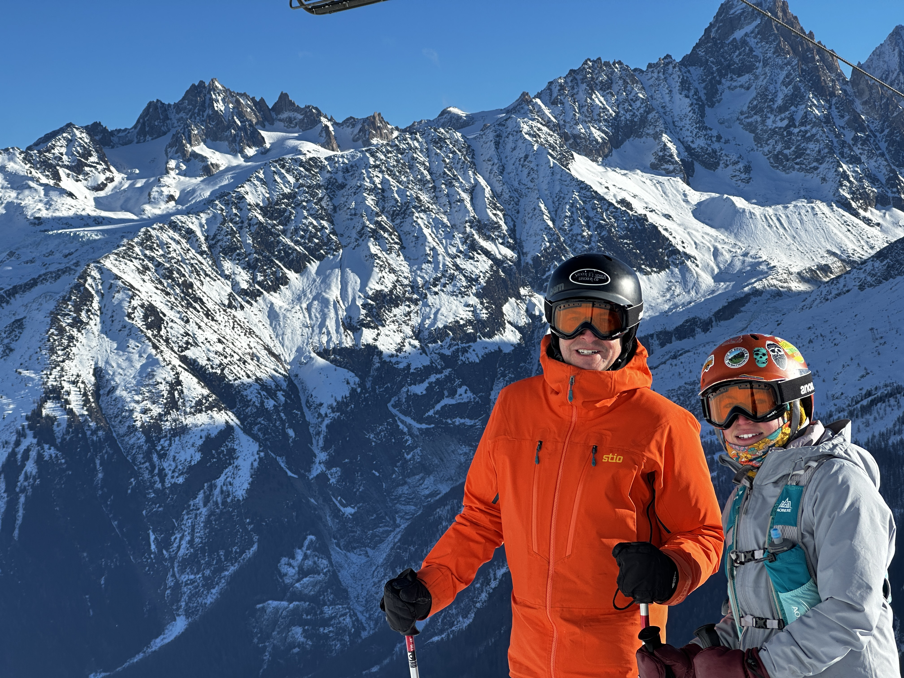

I am a sophomore at CU Boulder studying Creative Technology and Design with a minor in Business. I’m particularly interested in merging design, engineering, and the outdoors. I’ve worked across UX/UI design, photography, and digital design using tools like Photoshop, Illustrator, Premiere, Figma, and Onshape. In addition to my educational interests, I am on the Colorado Triathlon Team, Waterskiing Team, and a member of the Alpine Club.
When I’m not in Colorado climbing, skiing, or studying, I am in Minocqua, Wisconsin, on staff at Camp Kawaga, where I have the opportunity to positively impact future generations of young men. I help build key character traits that will serve them as the camper experience served me through our core values of spirit, enthusiasm, sportsmanship, and fellowship. I instill these values through my role as a counselor as I lead camping trips, teach outdoor skills, and manage positive and fun camping experiences.
Through my time there, I have developed management skills, critical thinking skills, and a positive, adventurous attitude. I’m driven by creativity, collaboration, and time spent in nature, always looking for ways to connect those values with real-world experiences.





Photography
Photography and Videography is one of my main hobbies, and I have interest in potential career centering videography. To share said intrest, I have been creating content under the tag Fishrose Productions on youtube and instagram, focusing on outdoor and creative content. To view some of my work, visit the photography page of my website and explore!
Photography